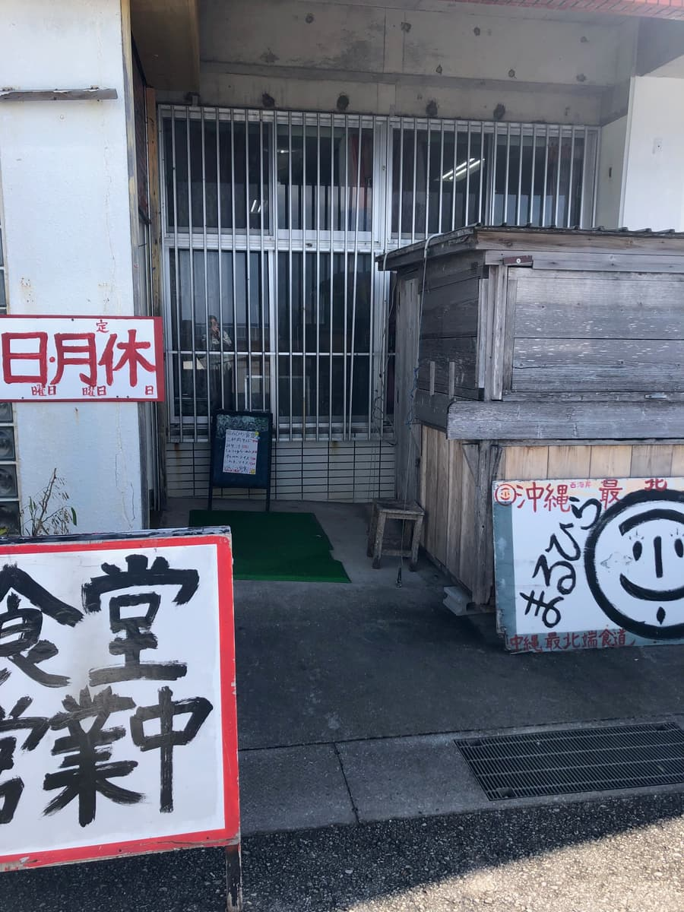
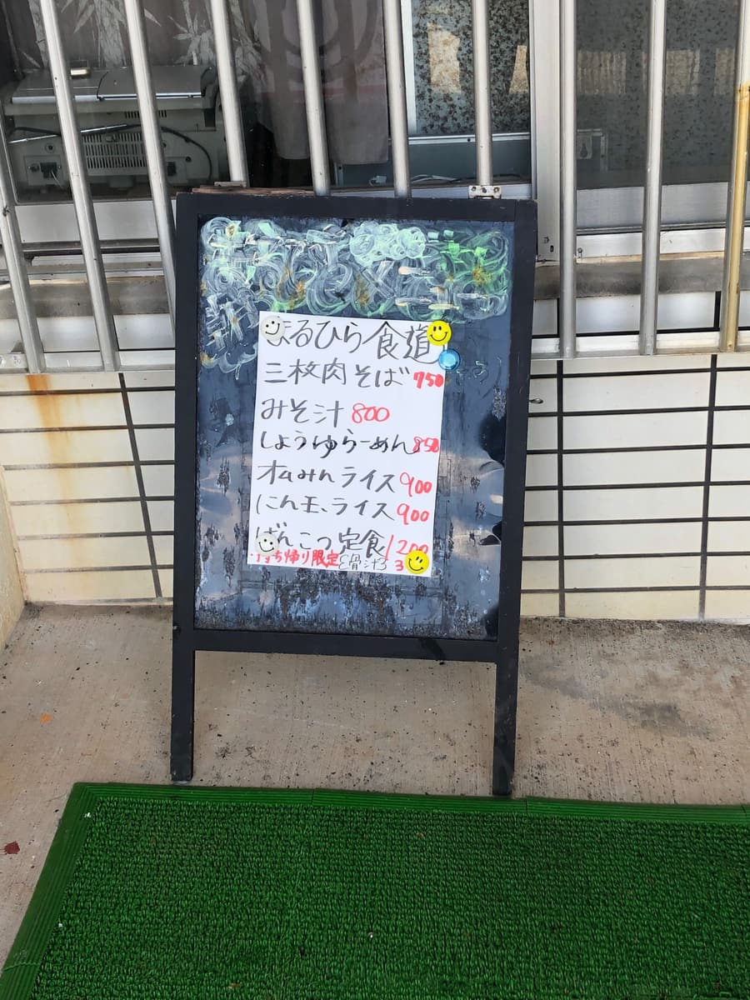
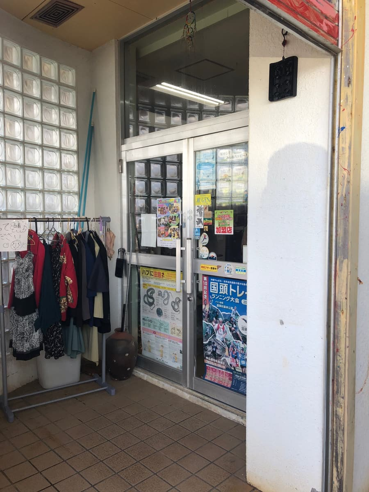
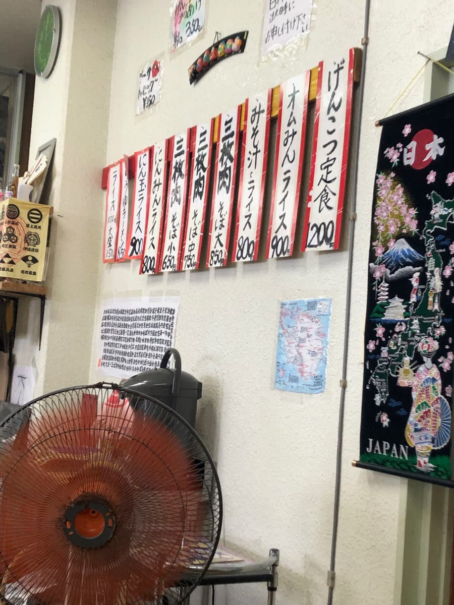
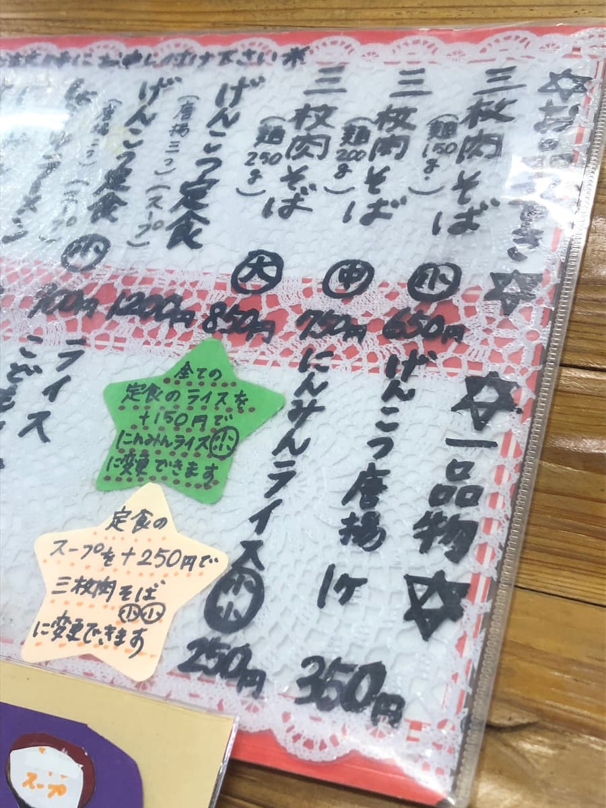
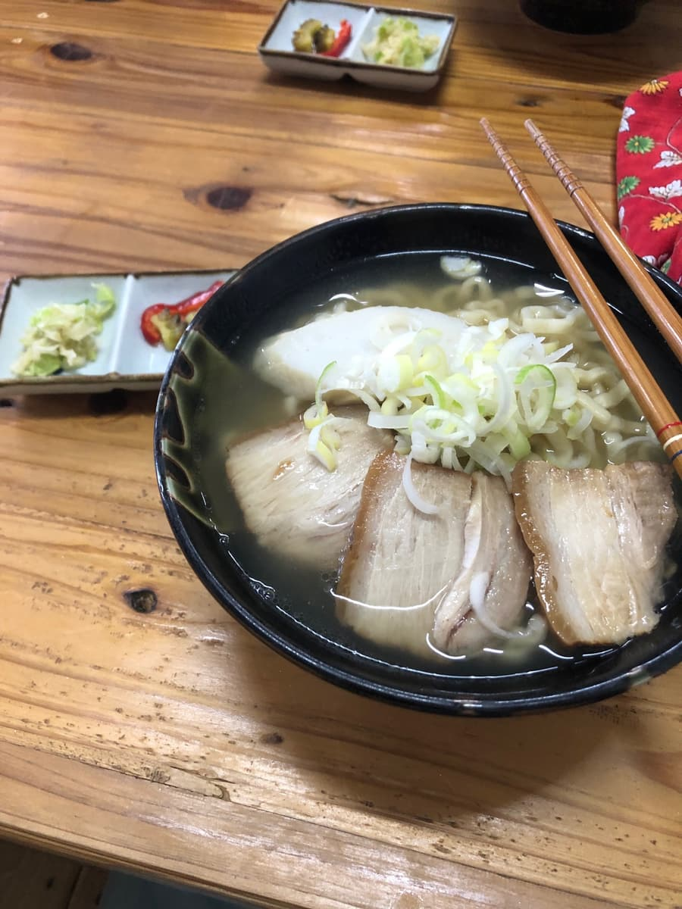
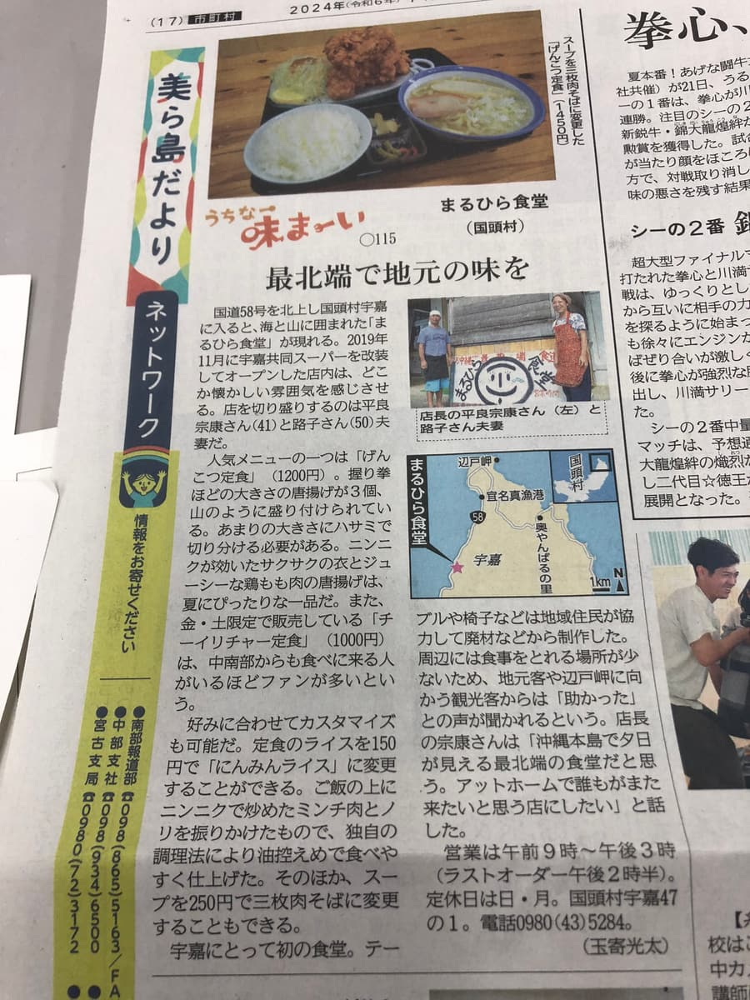

這次要介紹的是位於沖繩本島最北端國頭村宇嘉的「まるひら食堂」。這家店其實是以前的宇嘉共同商店，是長年深受地區居民喜愛的歷史悠久之處😁 2024年12月去吃的，也曾在報紙上被介紹，以「沖繩西海岸最北端的食堂」聞名。



因為位在國頭村這個沖繩本島最北部，是不太能輕易到達的地方，但正因如此才有特別感呢✨ 走進店內，瀰漫著傳統食堂的氣氛。也因為是中午時段，意外地有不少客人😲 不只是當地人，也可能有很多觀光客來訪。

看貼在牆上的菜單，除了沖繩麵以外，定食菜色也很豐富。其中「げんこつ定食」這個餐點讓我很在意😆 聽說會出超大的炸雞塊，似乎也是有名的餐點。這次的目的是沖繩麵巡禮，所以決定從菜單點了「三層肉麵中」。價格也是750日圓很實惠，雖然從菜單上看不出來，但招待附有醃漬小菜這點很令人開心😊


點餐後等了一會兒，「三層肉麵」送來了。外觀簡單，但感覺是紮實的沖繩麵。先照例品嚐湯頭😋 豬骨底的湯頭，是溫和清爽的味道。不過強的豬骨風味很舒服，完成度是帶有懷舊感的家常味道。或許是因為最北端的位置，才做成連觀光客也容易入口的溫和調味。
接著吃麵。是捲麵，口感偏軟。配料的三層肉，像拉麵的叉燒一樣切得比較薄，煮得非常軟嫩。和厚切三層肉不同的口感，這樣也很好吃✨ 還放了滿滿的白髮蔥絲，清脆的口感成為很好的亮點。
這家「まるひら食堂」的魅力，不管怎麼說都是「沖繩本島最北端」的特別感。在一般的沖繩麵巡禮中很難涉足的國頭村，特地來吃的沖繩麵，比起味道更成為令人難忘的體驗😊 也因為是前共同商店，有著扎根於地區的溫暖氣氛，有著和都市沖繩麵店不同的好。在悠閒流動的時光中吃的沖繩麵，讓人忘記平日的忙碌。
另外，這家店也如報紙所介紹的，是支撐地區飲食文化的重要存在。到北部地區觀光時，真的很推薦務必順道過去的店😄 味道是普通好吃的感覺。雖然不是特別突出的美味，但最北端的地點、前共同商店的歷史，以及長年深受地區喜愛的溫暖氣氛，我認為是這家店的最大魅力✨

評分（9分/15分）：到北部地區觀光、或是為了享受山原自然而來時，請務必在這家「まるひら食堂」品嚐沖繩麵。可以有平常嚐不到的「最北端的沖繩麵」這種特別體驗喔😊 下次也很在意「げんこつ定食」的超大炸雞塊，之後有機會的話想來挑戰看看😆
麵：★★★☆☆（3）
湯頭：★★★☆☆（3）
配料：★★★☆☆（3）